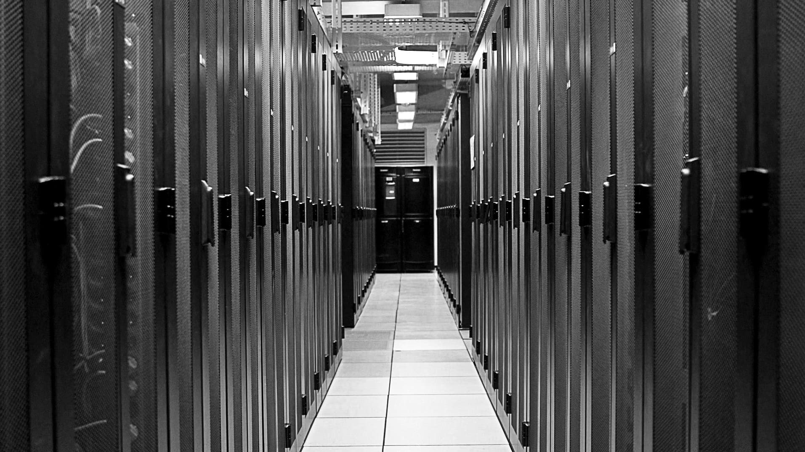

Nos vies connectées reposent sur une vaste infrastructure grâce à laquelle les contenus produits et partagés chaque jour en ligne en quantité prodigieuse – images, e-mails, vidéos – parcourent le monde. Composée de réseaux, de data centers et d’équipements utilisateurs, cette infrastructure s’ancre bel et bien dans le monde matériel, en dépit de la séduisante image aérienne du cloud computing que s’évertuent à promouvoir les géants du web.
« La métaphore du nuage désigne en réalité des espaces enfermés, qui ne voient jamais le ciel », écrivent les artistes et chercheur·se·s Stéphane Degoutin et Gwenola Wagon à propos des data centers. Comme d’autres infrastructures techniques avant elles, ces fermes de données sont rendues invisibles : le matériel informatique nécessaire au stockage et au traitement des informations numériques qui circulent sur le réseau mondial se cache derrière les façades aveugles de hangars, entre les murs d’immeubles ordinaires et même sous terre, comme le data center DC4 d’Iliad enfoui dans un ancien abri anti-atomique du XVe arrondissement de Paris. Ce sont des espaces de contrôle absolu, où rien n’est laissé au hasard, tout est optimisé, de la température à la lumière et à la circulation de l’airVoir World Brain, film-essai de Stéphane Degoutin et Gwenola Wagon (Irrévérence Films, 2015)..

Allée de serveurs dans un data center. Extrait du film World Brain de Stéphane Degoutin et Gwenola Wagon, Irrévérence Films (2015).
Il existe une large variété de data centers, des plus petits dispersés au cœur des villes aux immenses bâtiments des zones rurales et périphériques, qui hébergent des serveurs en colocation gérés par des sociétés spécialisées ou les sites dédiés des GAFAM. Le plus grand centre du monde, à Langfang en Chine, maintenant fermé, s’étendait sur une surface de 600 000 m2. Près de Paris, la société Interxion s’apprête à construire un immeuble de la taille du Stade de France, le long de l’A86, sur l’ancien site des usines Eurocopter : le projet Paris 8.
L’évolution de ces différents types de data centers suit celle des usages numériques. L’essor des objets connectés et de l’intelligence artificielle, notamment pour les futurs véhicules autonomes, augmente les besoins de traitement des données dans les grandes villes où résident les utilisateur·rice·s. Les data centers urbains sont connectés aux entrepôts, où sont stockées les données et qui sont venus remplacer les anciennes usines industrielles dans les zones périurbaines. Un nouveau réseau d’interdépendances remodèle les territoires, dessinant une géographie du numérique où facteurs techniques, politiques et sociaux sont imbriqués.
Le fonctionnement des data centers nécessite une quantité considérable d’électricité. De la mémoire aux réseaux électriques, tout doit être doublé car la connexion au réseau ne peut subir aucune interruption et ils nécessitent de puissants systèmes de refroidissement. En 2015 en France, ces architectures redondantes ont consommé 2 % de l’électricité du pays tandis que le secteur numérique dans son ensemble en absorbait 8,5 %Voir le travail de l’association négaWatt et son site dédié aux problématiques énergétiques : decrypterlenergie.org. Cette forte empreinte énergétique, au lourd coût financier, se trouve au cœur des réflexions actuelles : les projets de « data centers vertsGoogle se présente comme un pionnier des data centers verts : son compte Google Cloud sur Twitter annonce un bilan carbone neutre depuis 2007 et vise 100 % d’énergies décarbonées en 2030. » localisés dans des climats frais et propicesEn Europe, Facebook a choisi la Laponie suédoise pour installer ses data centers, tandis que l’entreprise Kolos s’implante dans l’Arctique au nord de la Norvège. se multiplient. D’autres conçoivent des architectures moins énergivores, à l’image du data center Marilyn à l’est de Paris, dont le bâtiment vertical utilise l’air extérieur au lieu de la climatisation pour refroidir ses serveurs.
Tour de refroidissement d’un data center en Chine. Photo : WaitForLight, Shutterstock.
Système de climatisation d’un data center du XVIIIe arrondissement à Paris (2019). Photo : Henri Garat, Ville de Paris.
Les data centers sont aussi des lieux stratégiquement sensibles, car les données qu’ils hébergent, que ce soit celles des internautes, des entreprises ou de services de l‘État, doivent être sécurisées. Il faut les protéger des bugs informatiques et des cyber-attaques comme des incendies et des inondations.
Armoires de serveurs d’un data center du XVIIIe arrondissement à Paris (2019). Photo : Henri Garat, Ville de Paris.
En 2019, la région Île-de-France recensait 123 data centers, soit un tiers de ceux du pays. La Seine-Saint-Denis, l’un des départements les plus pauvres de France, accueille aujourd’hui la plus grande concentration d’Europe. Plusieurs facteurs ont fait de cette ancienne zone industrielle un territoire de choix : un prix du foncier bas, de bons équipements en électricité et en fibre optique, une absence de zones inondables et la proximité avec la capitaleJade Lindgaard, « L’envers des data centers (1/3) : Ordiland en Seine-Saint-Denis », Mediapart, 5 août 2014.. Si cette transformation récente est soutenue par les pouvoirs publics locaux, notamment car elle génère des recettes fiscales, elle fait subir aux habitant·e·s de ces quartiers populaires de nombreuses nuisancesMentionnons aussi le très faible nombre d’emplois directs créés. : pollutions sonores dues à la climatisation, dangers liés aux réserves de fioul stockées pour alimenter les groupes électrogènes en cas de coupure de courant, fragmentation du territoire par l’apparition de grandes superficies infranchissables, pressions sur le réseau électrique local. Sur ce dernier point, les inquiétudes se multiplient car un centre de 10 000 m2 consomme autant qu’une ville de 50 000 habitant·e·s et nécessite une puissance électrique telle que le réseau doit parfois être adapté et faire intervenir le gestionnaire du Réseau de transport d’électricité (RTE)Dans le cadre du projet Paris 8, Interxion a construit son propre poste électrique d’une puissance de 80 MW en collaboration avec RTE..
Les nouvelles infrastructures numériques entraînent ainsi des transformations à plusieurs niveaux : spatial, par les aménagements requis sur le territoire et son maillage ; technique, par la puissance des raccordements électriques exigés ; social, par les discriminations exercées sur les populations locales. Comme l’écrit le théoricien en sciences politiques Langdon Winner :
Ce que nous appelons « technologies » participe à la mise en ordre de notre monde. […] Consciemment ou non, délibérément ou non, les sociétés choisissent des structures technologiques qui influent sur la manière dont les gens vont pendant très longtemps travailler, communiquer, voyager, consommer, etc. Les innovations technologiques ressemblent aux textes de lois ou aux institutions publiques qui fixent un cadre destiné à durer pendant plusieurs générationsVoir bibliographie..
Le gigantisme des data centers qui se créent actuellement et les problèmes que cela induit invitent à questionner la forme que prend cette mise en ordre du monde, physique et social.
Lors de l’inauguration du data center d’Equinix, en février 2019, dans un ancien centre de tri postal à Pantin, en Seine-Saint-Denis, le ministre de l’Économie Bruno Lemaire a déclaré vouloir faire de la France « la première terre d’accueil de data centers d’Europe », car « il n’y a pas au XXIe siècle de souveraineté politique sans souveraineté technologique ». L’adoption de ce principeVoir l’article de Margarita Padilla, « Souveraineté technologique, de quoi parle-t-on ? », dans Alex Haché (dir.), La Souveraineté technologique, Ritimo [en ligne], vol. 2, 2018. mérite d’être envisagée à condition qu’il ne serve pas à protéger des intérêts nationaux, mais à favoriser plutôt l’émergence d’écosystèmes techniques respectueux des humains et de leurs milieux, à l’image des hébergeurs associatifs qui se multiplient en France comme les CHATONS (Collectif des hébergeurs alternatifs, transparents, ouverts, neutres et solidaires) pour relocaliser des données. Il s’agit bien là d’une question cruciale dans l’écosystème numérique.
Clémence Seurat
Clémence Seurat est programmatrice artistique et éditrice.
Bibliographie
CARNINO Guillaume et MARQUET Clément, « Les datacenters enfoncent le cloud : enjeux politiques et impacts environnementaux d’internet », Zilsel, 3 (1), 2018, p. 19-62.
DIGUET Cécile et LOPEZ Fanny, « Les impacts énergétiques et spatiaux des data centers sur les territoires », Note rapide Territoires, 828, 2019.
HACHÉ Alex (dir.), La Souveraineté technologique, Ritimo [en ligne], 2 vol., 2014 et 2018.
WINNER Langdon, « Do Artifacts Have Politics ? », Daedalus, 109 (1), 1980, p. 121-136, traduit et repris dans La Baleine et le réacteur, Paris, Descartes & Cie, 2002.